Archives : 2006-09
放假，下班 @ Sep 30, 2006
下班了，最后走的我得点熏蟑螂的蚊香，一共六盘。我们与蟑螂一起生存在这办公室里好多年，这里到处堆着样品，废弃的纸箱....这时候一个台湾工厂的老板娘打来电话，互祝节日快乐。我问她国庆如何打算，她说2、3号在上海，4号厂里就要上班了。问我，我说3号开车去上海...她说你好FASHION啊，我说女人要爱自己...老板娘说这是节日最好的一句话，她说以后也要好好的爱自己！那个台湾工厂生意好到挑客人做，向我们涨价，我们这里还价还要看着人家脸色，整个厂基本都是老板娘一个人操持，很辛苦，当然家业丰厚。老板则种种花养养草......这种搭配也蛮奇特的，不过夫妻老婆店，一般红白脸都全了。去年开始接触这个厂，有同事说老板娘肯定不会给我好脸色，因为老板好色，而我长得还不错...这种等着看好戏的欲望到现在基本泡汤。这让我想起另一件事，有次和一个台湾客人在一起，人家问我是不是他女朋友....女人稍稍好看点挺倒霉，不是被人防就是人家小蜜，这世道上的人都是那么自以为是，这其中也包括我自己！
发现自己越来越不爱交谈，不愿参加热闹的聚会，为什么呢？以前我不是这样的性格。有天广播上讲说话多的人可能患有忧郁症，还好我现在话不再多了......

无题 @ Sep 29, 2006
晚上公司聚餐，可携带家属，老一套的活动，激发不了我的兴趣。先告辞去和朋友一起吃饭，然后送他到火车站，10：30的火车。以前听到火车的鸣笛声就感到亲近，因为那意味着可以回家，可以去远方。现在听见的是麻木。这个城市居住了那么久，好象人生已经种下大半在城市的土壤中，挪动起来固然艰难。
昨天晚上毫无目的性的冲到MAX买了条裙子和一件大的毛衣外套，年轻的女老板说今年流行带疙瘩的毛衣，只要合适我倒不管流行什么。现在生活和工作和我的脑袋一样乱糟糟的没有先后顺序，这是令我疲惫的原因之一。偶有时间看看洪晃的BLOG（http://blog.sina.com.cn/m/honghuang）确能轻松起来，她的BLOG上现在有问答题，大致都是关于情感两性话题的，看来始终困惑人生的除了生计之外就是情感问题了。每天无数的点击率和留言，使她的博客生机勃勃。她新办的杂志要是能象她的博客一样火红就好了。
快下班的时候，有些小家属已经在办公室里出现，大声地唱着歌，声音无比快乐，真是羡慕~
在中国留学的男孩 @ Sep 29, 2006
@Starbucks Coffee
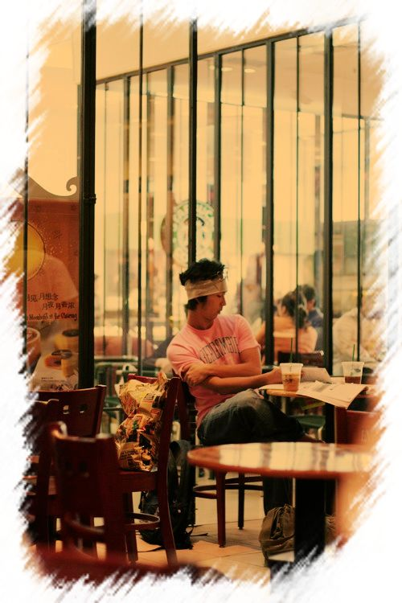
南京新建筑 @ Sep 29, 2006
俯瞰南京奥体中心
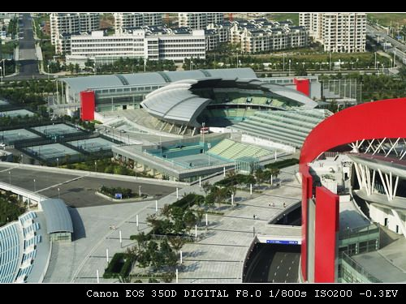
南京图书馆

江苏省美术馆 @ Sep 29, 2006
shot by Christina
美术馆门口
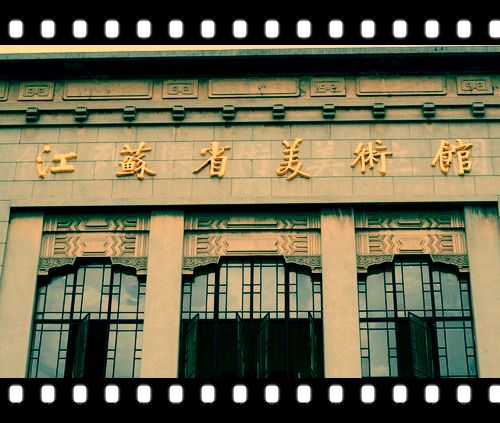
观画的陌生男孩
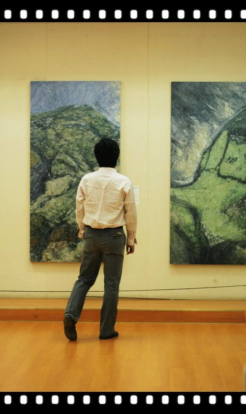
谁的生育计划？ @ Sep 21, 2006
闻听公司70年代末80年代初的女同事纷纷计划造人，有点怪怪的感觉。有些南京的女同事各方面条件不错，年纪不大，23岁结婚，24、5岁准备生孩子，她们在做自己想做的事情？还是在做别人要她们做的事情？我周围的女朋友们大多晚婚，有的还没有着落，不是因为自身条件不好，而是忠于自己！忠于自己的另一个层面是各各方面成熟稳定，尤其是心理上，我不会因为得生孩子而去生孩子。
淘“紫砂壶” @ Sep 19, 2006


桃@1912 @ Sep 19, 2006
上星期五鸽子请我和BESS吃饭，在1912的“桃”，店的外面看古色古香，里面中西合壁。有熟人陆续过来和女朋友们打招呼，好久没有去夜店，心情有点不适应，感觉夜生活已经不属于我了！鸽子星期五出发去云南旅行，15天假期，准备去丽江、梅里雪山、香格里拉、泸沽湖...真幸福啊！Bess周末出发去加拿大，10月底还要公派去德国、土耳其、新加坡，她这一年都在外面旅行了。
聚会，只是又一次发现衰老的痕迹......有些幼稚的孩子称我们为老女人，有谁能给老女人一个真正的定义？西方人认为女人从三十岁才开始，二十几岁的和四十几岁的都朝三十几岁的气质打扮。东方人则倾向小MM型的，这和东方大男子主义不可分，总有此观念与彼观念，管它什么观念，人总是从青涩走向成熟，从稚嫩走向衰老，谁敢说自己不会老？我们的自信不需要建立在别人的眼睛里，现在需要的是享受！殊不知，那些眼角的鱼尾纹说明我们曾经灿烂的笑过......
Shot by Christina
“桃”餐厅@1912
Canon eos 350D
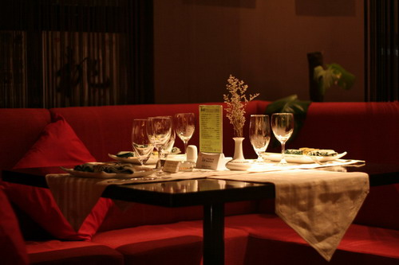
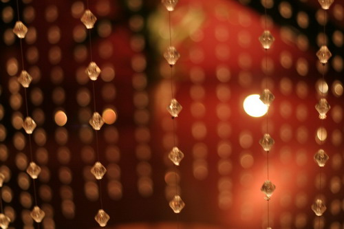
Bess@“桃”餐厅
Canon eos 350D
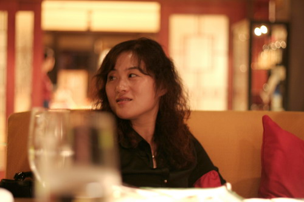
鸽子@“桃”餐厅
Canon eos 350D

学做人 @ Sep 12, 2006
工作中会遇到讲话阴阳怪气，耀武扬威的家伙，简单的问题简单的逻辑就可以解决的，偏要弄你两句，摆个谱，对领导和对同事的态度完全不同。这类人其实内心自卑，担心别人小瞧他，希望自己形象高大，有一定的地位。然而，光靠语气和态度是赢得不了别人的尊重，要学会做人，做人最基本的原则是首先尊重对方！我对这类人存有的态度就是鄙视！
九月繁忙 @ Sep 11, 2006
周末好象比平时的工作日还要繁忙，时间总是不够用。周日晚上9点半就睡觉了，早晨6点醒来一次，继续睡到7：30起床。中午和同事吃饭的时候仍然哈欠连篇，无论睡的多还是睡的少，都困啊？！
今天Grace从HK回到上海，我期待她回南京来，她说有人等待是多么美好的事情~~估计是指她先生的等待吧！
Bess这月24号去加拿大，厉害的是自己申请去旅游，已经第二次了，还打算申请去英国的什么古堡看看...今年是她的旅游年，上半年去山西开会，后来去了日本，现在去加拿大，如果人生可以在旅行中度过多好呀！本来打算23号和她一起去上海和ANGIE聚聚，但我的计划有变，只能罢了。
这个月有个十多年前的老朋友从北方来南京培训，停留一个月左右，希望能多些时间陪他在南京转转。记得上次带他和他培训的室友在1912外围转了转，那室友充满感情的说：“太美了！”我当时有点诧异。据说他所在的大院不让上网，还定期到电信去查家家户户有没有上网的，什么时代了？晕！
这段时间接到两个调查电话，一个是一汽马自达委托一家公司对于售后服务及4S店服务的调查，约了周日下午面对面谈话，有录音和笔录，送了精致的套装指甲工具。调查员是做兼职的在校大三学生，兽医专业。从电话里的声音判断一定是位戴眼镜的男士，果然不出所料。第二个调查电话是电信打来的，调查电信套餐服务什么的，问了几个问题，简单的让人无法想起来都是些什么问题，有点奇奇怪怪的！特讨厌在上班时间接到诸如此类的电话，有骚扰之嫌，影响人工作。
......
周日晚饭后躺在爸爸的床上想有哪些事情要做，越想越多，有的人好久没联系了，老妈问起来才知道，赶紧短信联系。欠了几顿饭没请~~
更奇怪的是我并未写书，却有人将我的名字属了上去，为的是多得稿费，现在什么事情都有！
降温 @ Sep 05, 2006
冷空气来了，气温下降5度左右，还下起了雨。
不过今天我还是穿了裙子上班，可惜我那双鞋从停车小区走到公司，前面浸湿了。没有什么值得开心的事情，日子如流水平淡无痕的划过，我居然胖了5斤：）
艰难的停车 @ Sep 04, 2006
小区物管强制有车要停的业主购买车位，方能停车。一个车位13万人民币，大约80多个车位，现在有30几个车位被购买，剩余车位即使没有人购买也不能租赁。没买车位的业主不得不被赶出车库停车，最近小区前后门马路两边停满了车，大家自发斜侧方停车，以便空出更多车位给他人方便，没想到业主的素质都还不错！这个规定自9月1日开始执行，前一天夜里车库入口处就安排了特警值勤，担心业主闹事，这两天也一直侯着，还有警车经常过来转悠。不太了解房产方面的相关法律，据说车库已经分摊到业主买房子的公共面积里了，如果属实，强制大家买车位便是不合理要求。总之，既无奈又令人气愤！房产公司这种做法是否不符合法律？
最最可气的是，汽车在路边停了一夜无人看管，早晨若在9点后出发，立刻会跳出一个戴着太阳帽、胸前挂着小包的妇女，操着外地口音向你收费。恰逢我心情不好那次，这个奇怪的女人跳到我的车前收费，立即遭到我的质问：“车停了一夜你看管了吗？”那女人怔怔有词地回答：“不管，只要你停在这里就要收费。”小区后门对面是个家具城，收费女人只负责白天收费，晚上便收工回家。小区业主的车大多夜间停在外面，早晨上班开走，走的早根本遇不见她，但是周末谁都会睡个懒觉，难免遇见。收费女人的话令我气不打一处来，回头甩了她一句：“没帮我看车还想收钱，你脸还真大！”人家也不示弱：“那你以后还停不停在这里了？你再停试试看！”我靠，还威胁我啊*%·#￥#虽然未继续抬杠下去直接开车走人，但心里还是悬乎，万一车牌被她记下来，乘我不在糟蹋我的车怎么办？·#￥%—*脑海里想象出许多车子被折磨的情形，哎呀呀......看来是个戴袖章的都不能得罪哦！
广播节目里曾经报道南京现在停车位与私家车不成正比，车位明显过少，有些家庭买辆车几万块，买个车位比买车的钱还要多，让人怎么接受呢？这个月开始我已不在公司大厦里停车了，而是停到旁边小区的露天停车场，停一天5元，工作22天，才110元。而公司停车每月不管停不停都要交300元，过去自家小区停车每月240元，光是固定停车费每个月要准备540元。现在可好，家里省了停车费，公司这边每月最多110元。公司10月底准备搬到新的办公地点，据说有1000个车位免费给职工停，希望这个消息是真实的。车子在外面风吹日晒，哪能不心疼呢！David公司停车要900元，他根本没交，和看车人混得熟了，直接给他5~10元停一天不要票，人家捞点外快自然高兴。他买了新奥迪之后我把家里的车位让给那辆庞然大物，我停路边，现在可好，落得和我一样的命运。不知为什么，谁都没有买车位的打算，总觉得不值！
雨前雨后 @ Sep 03, 2006
军舰岛上突然下起大雨，好些人躲进棚子，也有人在外面酣畅淋漓的玩耍，这个孩子看着前面一对男女在搬手腕。

这个男人在等待雨停，黝黑发红的肤色和闲庭漫步的神情，显得与周围人不同~

不知道他们是否是恋人，他们在雨中嬉戏的欢乐几乎感染到每个注意到他们的人。
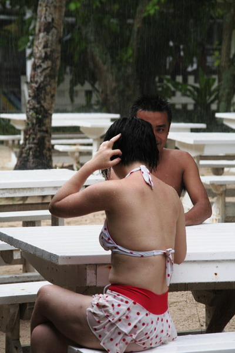
如果说去塞班有什么遗憾的话，应该是我的照片太少太少，没有技术好的人为我拍摄，郁闷~这张照片焦点还不在我身上，真是谢谢同事大哥了！

觉得这种泛红的古铜色很漂亮，下回去海边不能留有遗憾，晒一次古铜色试试。在酒店买了双胶底鞋，看上去象是慢跑鞋，海底的珊瑚扎脚，还会有海胆之类的东西，穿鞋下海安全。
这个孩子全副武装，迈着军人的步伐，准备下海呢。
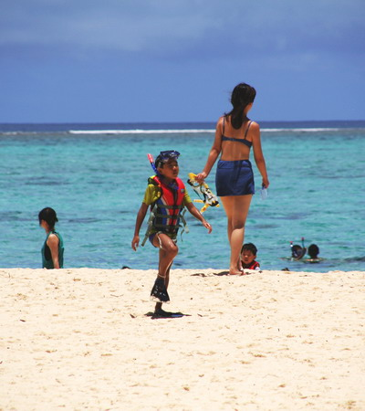
塞班之军舰岛 @ Sep 03, 2006
告示牌上醒目的用中日韩英四国语言写着：禁止游泳。而游客就在告示牌前的海水里浮潜，那里的鱼很多，好些是我在泰国和三亚深潜时也不曾见过的，有的鱼闪闪发亮，还有五彩的小鱼，阳光好海水能见度高，带写早餐的面包和香肠，鱼儿就跟着你转了。幸好买了面镜和呼吸管去，在岛上租一副浮潜用具需要USD10.00，最主要是不卫生。
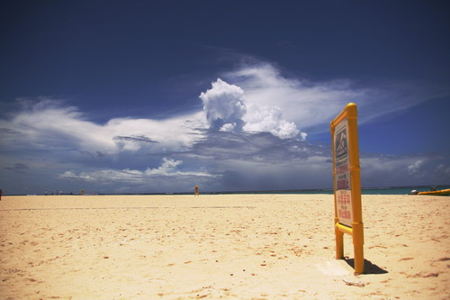
军舰岛名称的由来是因为这座岛从高空俯瞰象一艘军舰。军舰岛就在我们居住的酒店对面，走到海滩边有人会上前来询问你是否去军舰岛，每人USD15.00，订好返回时间，船家会负责接你回来的。到达后需交纳USD5.00上岛费。我们几个同事没有跟导游去，遗憾的是停留的时间还是太短，从早上10点多到下午13：30左右返回。那里的鱼令人留恋，如果以后还有机会去，怎么着也要安排一整天在军舰岛上度过，那里的浮潜是我所经历过最棒的。
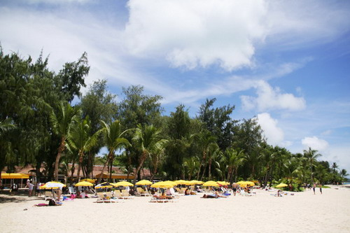
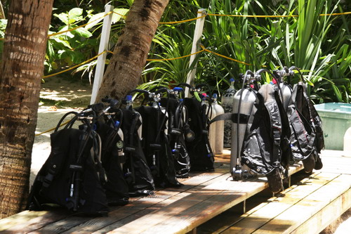
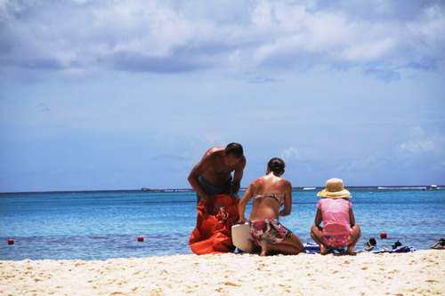
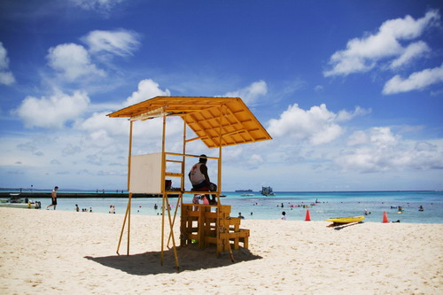
当地人向你SAY HELLO的手势，象是打电话，对吗？
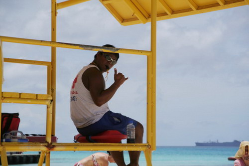
一起上岛的日本情侣。
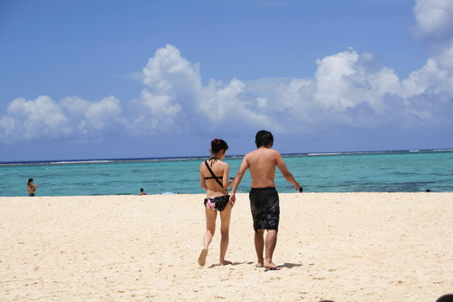
图解塞班 @ Sep 03, 2006
一张与塞班无关的照片,但是是前往塞班的浦东机场,特别喜欢的景深,用55MM/1.8定焦头拍摄。
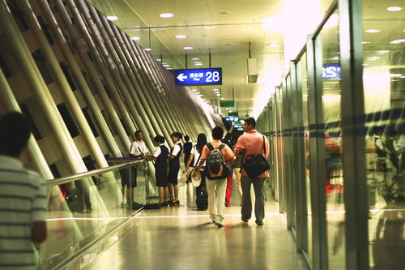
总督府门口的告示牌
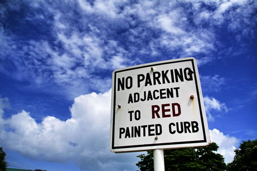
热带植物园的秋千
IT中心同事的ONE WAY
鳄鱼嘴海滩
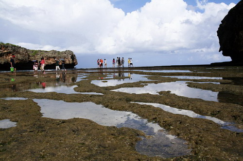
去音像店路过这座宗教建筑,不知名$%^#^
塞班最大的DFS免税店
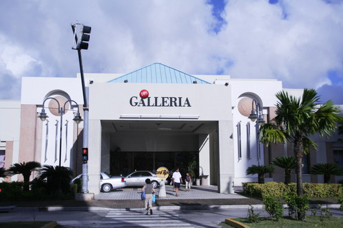
市中心主干道
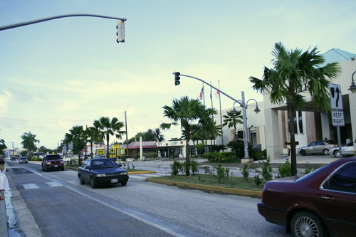
热带植物园里被禁锢的花草
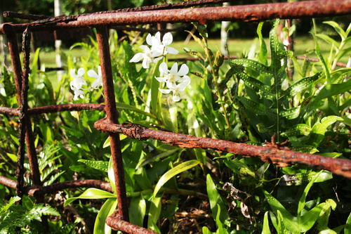
塞班有名的凤凰花
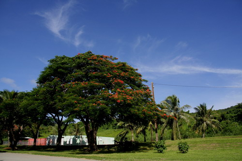
塞班的吉祥物 @ Sep 02, 2006
代表塞班的吉祥物就是这只长着长长鼻子的熊猫？！
好奇怪的设计，我第一想到的是“说谎的熊猫”，所以它的鼻子长长了。来源于小时侯的童话故事？
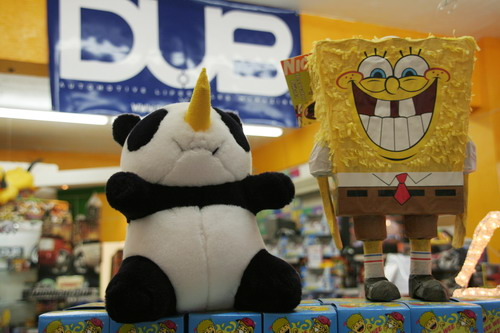
塞班的海 @ Sep 02, 2006
塞班除了棉花糖般的云朵，有特点的就是七色海了。照片中从海岸延伸出来淡兰色海面，接着的那条白色的海浪线是天然形成的防波堤，海水击打在防波堤上形成白色浪花。在海岸线与防波堤之间的海面由于海底深浅不一的地理情况及海藻珊瑚的多寡，从而使得海面显示出不同颜色，虽未象当地人称作的“七色”海，但不同颜色的海水结合在一起乍是好看！海岸边上竖着的四根秆子，中间拦着网线，开始还以为是练习高尔夫球的场所，后听说这是《美国之音》面向亚洲的转播站。

这张照片处理之后，在我脑海里跳出来三个字“梦工厂”。两个人驼着背往海水里走，姿态随意，左右摇摆，顶光将他们的身影投射在沙滩上，因为这两个人显得整副图更赋有想象力，很奇妙！
那片海水底下有许多懒洋洋的海参，要是在国内早就被人捉光了。记得上次去玄武湖，见到有人挽着裤腿站在湖里捞螺蛳，一问是准备自己吃的。南京的生活节奏比上海要慢，可大多数人还是很浮躁，就象挤公共汽车，你不急着上有人上，你不抢座位有人抢......螺蛳你不捞有人捞；看得见的钱你不挣有人挣；房子贵是吗？你不买有人买......你害羞，不愿意去拼不愿意去挤，那机会就给别人喽，大家似乎没有时间与空间去体会生活，也没那个兴趣。
有时人需要和自己对话，问问自己的感受。
在海边抓拍到这个穿着红色短裙的小女孩，天空海水与她漂亮的裙子形成的对比，令人视觉享受。

我很重要？ @ Sep 01, 2006
“我很重要”，或者说“我显得很重要”，这是人生存的原动力之一。因为这点，有人会发明原子弹，有人当上恐怖份子，有人会学十门外语，有人会在街上裸奔，也因为这点，有人会歧视外地人，有人会爱炫耀，有人爱摆阔，有人爱吹牛，有人发神经，更因为这点，我们可以发现，我们有时候爱他人是爱自己，恨他人其实是在怜惜自己。
而世界上并无重要的人物。爱情当中的人，很多人多年后不得不悲惨的发现，他们谁也不重要，再多精致的的爱之神学，多么努力建筑的情之教堂，里面不过一次又一次重复着那些乏味的、周而复始的、永不悔改的无聊事件。对你真正重要的是处理家庭琐事的小保姆及居家附近的便利店，可是你不会爱上小保姆，也不至于跟便利店的老板搞GAY。
我不是一个重要的人，这点常识可以让我们不抓狂，不上火，不觉得委屈。
我是一个有尊严的人，这点常识可以让我们不纠缠、不耍赖、不痛哭流涕。
—《上海壹周》连岳